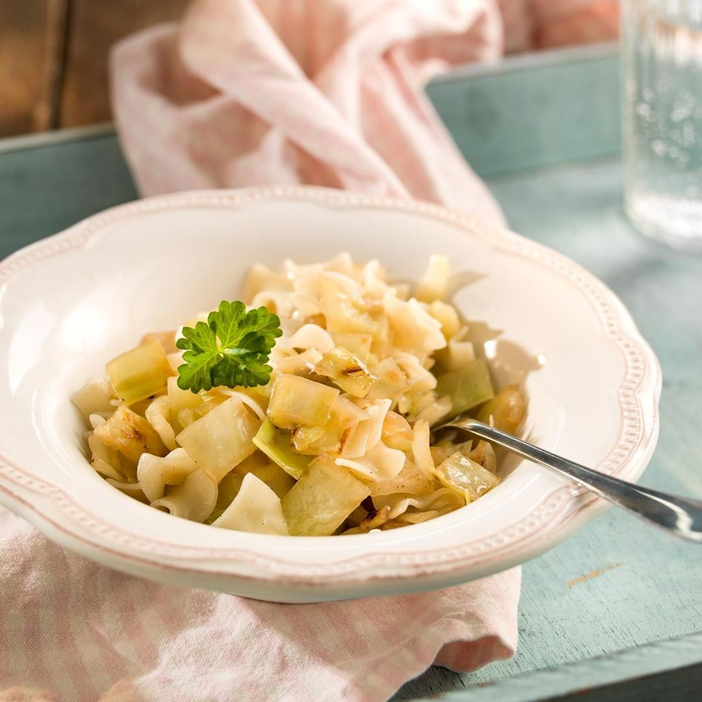

Kapustové fliačky podľa @komora_coopjednota — Normy Jedál
Tradičné slovenské kapustové fliačky. Ak chcete, aby aj tie vaše chutili ako od babičky, pripravte ich podľa nášho videoreceptu na bit.ly/kapustove-fliacky. 👌⠀
#komoragazdin #recept #videorecept #fliacky #kapusta #kapustovefliacky #tradicnyrecept #odbabicky #cestoviny #staramama #dobruchut #domacastrava #domacejedlo